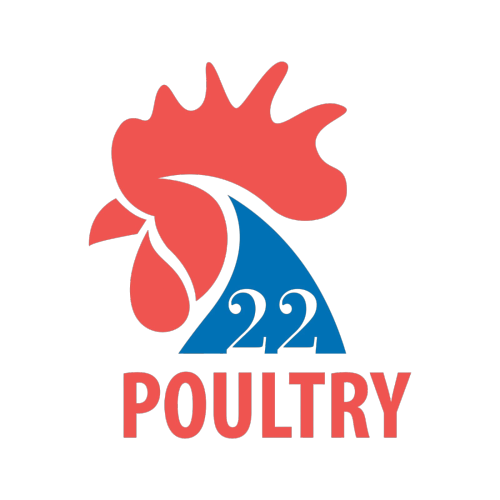

Video Resume
Founder Pitch & Walkthrough
Upload Reel
Admin Controls Active
Nice to meet you, I am
Amin Shaikh
AI Product Manager
I build AI products and prove they work. Over 3+ years I've shipped classifiers, RAG assistants, and multi-agent systems — each with its own evaluation harness, cost model, and a clear rule for where a human stays in the loop. One principle behind everything: I don't ship AI I haven't measured.
6
AI Systems Built & Evaluated
3+
Years Of Product Experience
2
Zero-To-One Ventures Led
Explore the AI Systems Lab
Step into Starry Night mode to inspect 6 real-world LLM products, evaluation harnesses, cost models, and slide deck teardowns built and shipped by Amin.
Amin's AI Systems Lab
Autonomous Agents, RAG Pipelines & Production Evals
I build AI products and prove they work. Over 3+ years I've architected, benchmarked, and shipped classifiers, multi-agent pipelines, and retrieval engines — each with a ground-truth evaluation harness, cost per 1K tokens model, and human-in-the-loop guardrails. Zero unmeasured AI shipped.
6
Shipped Systems
100%
Eval-Harnessed
<1.2s
Target Latency
0→1
Architecture Ownership
Professional Experience
Associate Product Manager
PassionBits.io
01/2025 - Present
Bangalore, India (Full-Time)
At PassionBits.io, we operated in the high-growth, fast-paced world of User-Generated Content (UGC) and video advertising. The baseline landscape for creative production, however, was anchored in a highly traditional, linear waterfall model: Research → Scripting → Casting → Shooting → Editing.
Brand marketers, creative leads, and production teams faced immense operational drag. They battled severe creative blocks, missed real-time regional trends due to data overload, and routinely launched ad campaigns based on guesswork rather than validated data. The process was slow, costly, and deeply fragmented, turning what should have been an agile marketing workflow into a massive operational bottleneck.
We realized that incrementally patching this legacy workflow wouldn't suffice; we needed to structurally redefine the category. We set a bold product vision: to transition from a manual, hand-off execution process to an autonomous Agentic Intelligence Engine that converts unstructured real-time market signals into data-validated growth flywheels.
As the Product Manager, I initiated a rigorous product discovery phase to map user pain points directly to a technical solution, organizing our execution into a strict three-tiered prioritization framework:
- Tier 1 (P0) - Core Value Discovery: Eliminating guesswork and blank-page syndrome.
- Tier 2 (P1) - Production & Cost Efficiency: Automating script variations and creator matching.
- Tier 3 (P2) - Strategic Nuance & Long-Term Assets: Integrating human authenticity and institutional memory.
We began building the Intelligence & Multi-Modal Analysis Layer. To handle high concurrency, we utilized FastAPI to build an asynchronous API layer orchestrated via LangChain. To truly understand what makes an ad perform, we moved beyond basic keyword matching and built a pipeline to break down raw video into a multidimensional vector space:
- Visual Analysis: Implemented frame sampling at 0.5 Hz processed by YOLO for real-time object and structure recognition.
- Audio/Text Extraction: Integrated OpenAI Whisper for speech-to-text and Tesseract OCR for burned-in captions.
- Aesthetic Quantification: Deployed CLIP to mathematically capture the visual "vibe" and style of high-performing ads.
To feed this analytical engine, we scaled up our Data Ingestion & Agentic Production Pipeline. We architected a multi-source collection engine using the Meta API and Selenium to scrape trending organic formats, routing the media through an automated FFmpeg pipeline for normalization.
All extracted features were passed through the OpenAI Embedding API and stored in a Pinecone vector database. Using LangChain's agentic reasoning, the system could autonomously retrieve winning hooks and success patterns from this vector index, feeding them into GPT-4o and Claude 3.5 Sonnet to instantly generate structured, high-converting scripts. Finally, we tied this to a real-time creator marketplace matching engine powered by a geo-fenced availability algorithm, bridging the gap between automated insights and rapid human execution.
Our core metrics proved that transitioning to an agentic architecture transformed our product from an operational cost center into a dominant value driver:
- Velocity Optimization (L1 Metric): Achieved a 46% reduction in Time-to-First-Brief, completely neutralizing "blank page syndrome" and allowing brands to launch trend-aligned concepts in hours instead of weeks.
- High-Fidelity Matching (L2 Metric): Drove a 2.4x acceleration in search-to-shortlist conversion rates by using deep visual DNA analysis (CLIP + YOLO) rather than simple metadata.
- Defensible Scale: Created an unassailable institutional moat by synthesizing 24,000+ distinct ad signals into a searchable library and autonomously generating over 2,000+ data-backed creative scripts.
Ultimately, we reclaimed the strategic capacity of creative teams—reallocating their cognitive energy away from manual technical drudgery and back toward high-leverage decision-making, positioning, and brand resonance.
And ever since then... PassionBits has operated on a self-sustaining Intelligence Flywheel. Every creative signal ingested makes the next AI-generated script more precise, and every creator interaction adds human-centric validity to our automated outputs—proving that deeply technical, agentic product design can turn standard industry bottlenecks into scalable, proprietary engines for business growth.
Jr. Product Manager
Product Initium
08/2023 - 10/2023
Bangalore, India (Part-Time)
The journey of Product Initium didn't start with a codebase; it started with a shared obsession for authentic Product Management. I was regularly publishing articles on rigorous product discovery, the Mom Test, and customer-centric validation. These writings caught the attention of Anukool Tiwari in a specialized PM community, sparking a conversation that quickly evolved into a shared vision: the barrier to entry for practical, hands-on PM experience was simply too high.
We realized that aspiring Product Managers were trapped in a paradox: they needed experience to land a role, but needed a role to gain experience. To bridge this gap, we conceptualized Product Initium—an immersive platform designed not just for interview preparation, but as a live training ground for executing actual, high-stakes PM tasks.
As the Jr. Product Manager, my immediate priority was to validate our core assumptions before writing a single line of production code. I spearheaded a 0→1 discovery phase, conducting over 35 deep-dive user interviews strictly adhering to the Mom Test principles. I needed to ensure we were solving a genuine pain point, not just building a nice-to-have tool.
Once the problem space was mapped, I authored the PRD, defined our success criteria, and scoped the MVP roadmap. But rather than handing off specs and waiting weeks for engineering, I leveraged "vibe coding" and AI-driven rapid prototyping. By instantly generating functional prototypes and deploying rapid-validation surveys, we could test high-impact features with real users in days instead of months.
Today, Product Initium is officially launched. While the fully automated interview features are still evolving, the platform is already actively used. Anukool currently leads live, hands-on cohorts directly on the product, transforming theoretical PM knowledge into applied, battle-tested skills for the next generation of product leaders.
Founder
22Poultry
12/2022 - Present
Bangalore, India (Full-Time)
The inception of 22Poultry wasn't born in a boardroom; it emerged from ground-level realities. Through deep interactions with relatives and friends in the agricultural sector, I uncovered a glaring structural flaw: India's small-scale poultry farmers—managing thousands of birds—were losing up to 55% of their potential revenue to predatory middlemen, while urban restaurants simultaneously struggled to source traceable, consistent supply.
Seeing this massive, unaddressed gap between 6 million rural farmers and a booming $51B food service market, I recognized an opportunity to structurally rewrite the economics of the industry. I founded 22Poultry with a singular mission: to build a direct B2B infrastructure that maximizes profit margins for both small-scale farmers and institutional buyers like Quick Service Restaurants (QSRs).
By cutting out traditional middlemen, our model enables a 25-30% net profit increase for farmers, directly translating to an additional ₹1.2-2.0 lakh in annual household income. Simultaneously, we solve the procurement nightmare for QSRs by aggregating fragmented small farms into a single, reliable supply chain that guarantees consistent sizing, food safety traceability, and streamlined logistics.
Operating as a solo founder, I architected a capital-efficient cloud infrastructure (using Vercel, Supabase, and Oracle VM) to orchestrate this matching engine. We are proving that when you solve a genuine, ground-truth problem with the right technology, you can turn a broken, fragmented supply chain into a mutually profitable ecosystem.
Product Analyst Intern
Shop Online New York
09/2022 - 02/2023
New York, US (Internship)
As a local-first e-commerce platform specializing in furniture and interior design, Shop Online New York faced a unique challenge: translating the highly tactile experience of buying furniture into a seamless digital journey. However, we noticed a critical issue—users were consistently dropping off deep in the funnel, right at the paywall window, preventing local traffic from converting into sustainable revenue.
My mandate as a Product Analyst Intern was to uncover the behavioral blind spots causing these drop-offs. I established a rigorous analytics infrastructure using SQL, Google Tag Manager, and GA4 to accurately map the entire conversion funnel.
By analyzing the customer journey through Mixpanel and reviewing Hotjar session recordings, I identified the exact friction point: sticker shock. Users were abandoning their carts because unexpected charges were only revealed at the final billing step. To solve this, I collaborated with the engineering and design teams to design and A/B test a persistent, floating calculation window. This UX update dynamically displayed the final, all-inclusive price throughout the checkout flow.
The impact of this transparency was immediate. By empowering users to make fully informed buying decisions upfront, we significantly increased their faith and trust in the platform. These optimizations directly boosted customer retention by 15% and reduced overall churn by 10%, reinforcing my core product philosophy: tracking granular data to make small, trust-building UX fixes is the ultimate lever for driving massive business impact.
Product Management Intern
TheEndorse
06/2022 - 09/2022
Delhi, India (Internship)
TheEndorse is an AI-powered employee referral platform with a bold mission: to completely eliminate a company's reliance on costly external HR outsourcing by leveraging machine learning to optimize internal employee networks. However, to build an autonomous hiring engine, we needed a seamless, high-fidelity way to ingest and parse an immense volume of unstructured data—from complex resumes to raw screenshots.
As a Product Management Intern, I owned the 0→1 development of this parsing workflow. I initiated the project with deep-dive market and user research, leading brainstorming sessions to crystallize our product strategy. To ensure tight, user-centric feedback loops, I rapidly translated these early insights into intuitive Figma wireframes and functional prototypes for our MVP.
The technical core of the platform materialized when I authored the PRDs to integrate Azure AI Vision into our backend. I spearheaded a dual-pronged AI approach: deploying OCR specifically for general non-document visuals (like screenshots) and leveraging the Document Intelligence read model to precisely extract nuanced data from text-heavy resumes. This integration completely automated our data extraction pipeline, resulting in highly optimized profile matching, sorting, filtering, and prioritization.
To ensure this integration delivered true ROI, I established a rigorous KPI tracking framework. By monitoring metrics like Profile Matching Accuracy (PMA), Average Matching Latency (AML), OCR Image Recognition Accuracy (OIRA), and Document Intelligence Read Accuracy (DIRA), I was able to tangibly demonstrate to stakeholders how deep technical integrations directly accelerated user engagement and platform conversion rates.
Associate Business Analyst
Banao Technologies
04/2021 - 03/2022
Bangalore, India (Full-Time)
At Banao Technologies, I worked at the intersection of client vision and technical execution, specifically focusing on empowering MSMEs. Many local businesses, from specialized tuition centers to bespoke furniture artists, were struggling to digitize their operations without getting lost in technical complexity.
Stepping into a hybrid Business Analyst and Product Owner role, I spearheaded the 0→1 development of two major web applications. My process began far away from the codebase—leading extensive requirement-gathering sessions with clients, stakeholders, and Subject Matter Experts to capture their exact operational needs.
I translated these complex business requirements into comprehensive Business Requirement Documents (BRDs) and system specifications. To ensure clients and cross-functional engineering teams were perfectly aligned early in the process, I utilized Figma to rapidly design and iterate on low-fidelity wireframes.
By owning the product backlog, prioritizing high-impact features, and consistently refining project scopes based on shifting requirements, I ensured our cross-functional teams delivered intuitive, scalable digital platforms that genuinely transformed how these traditional MSMEs operated online.
Product Integration Specialist
Helpy Moto
09/2020 - 02/2021
Delhi, India (Full-Time)
At Helpy Moto, the overarching product vision was clear: deliver a frictionless, highly reliable user experience across multiple platforms. However, maintaining that seamless journey required intricate orchestration behind the scenes, specifically ensuring that our third-party integrations and internal APIs communicated flawlessly.
As a Product Integration Specialist, my core objective was to bridge the gap between our technical capabilities and the end-user experience. I rigorously evaluated and integrated essential external tools—like Razorpay, Google Maps API, and Google Analytics—while ensuring the user journey remained completely intuitive.
A major technical challenge we faced was integration instability causing downstream operational issues. To solve this, I developed and implemented an automated API testing protocol using Postman. This allowed us to catch critical integration glitches before they reached production, directly reducing refund processing errors by 10% and massively enhancing overall system reliability.
By championing agile methodologies and streamlining these critical data flows, I not only maintained strict data accuracy but also significantly accelerated our time-to-market, proving that rigorous backend integration is the foundation of a premium frontend experience.
Skills
Golden Test Sets, F1 & Confusion Matrices, Confidence Calibration, Ship/No-Ship Thresholds
Where AI Helps vs. Where It Shouldn't Be Trusted, Trust Boundaries, Human-In-The-Loop Design
Orchestrated AI Pipelines (LangGraph), Eval Gates, Recovery States, Model Routing
Multi-Agent Systems, Memory Design, Tool Use, Cost-Per-Run Economics
LLM APIs, Structured Outputs, RAG, Streamlit — Working Prototypes In Days, Not Quarters
User Interviews, Focus Group, Surveys, Primary & Secondary Research
PRD Authoring, Product Vision, Roadmap Prioritization, GTM Strategy
Figma, Wireframing, Rapid Prototyping, UX/UI Collaboration
SQL, Python, Mixpanel, Google Analytics, A/B Testing
Agile/Scrum, CI/CD, Stakeholder Alignment, KPI Monitoring, API Testing
Featured PM Projects

22POULTRY: Transforming India's Small-Scale Poultry Industry
Solving Market Access Isolation for 6M+ Small-Scale Farmers
The Problem
Small-scale farmers receive only 45-55% of mandi price due to middleman dominance.
Solution Highlight
Connecting farmers directly to B2B institutional buyers (QSRs, Hotels) to increase profit by 25-30%.
Impact
+25-30% Net Income Increase
Value Created
₹1.2-2.0 Lakh/Year Household Gain
Opportunity
₹2.6T Market Size (2025)
Project Assets
22POULTRY Strategy Deck
Truesignall : RECLAIMING THE FOUNDER-LED GTM ADVANTAGE
Fixing Structural Outbound Failure for Seed-to-Series A Founders
The Problem
Founders lose 40-70% of selling time to manual research, missing buying signals that expire in minutes.
Solution Highlight
Real-time signal intelligence (job changes, hiring, intent, Individual signals, Mutual connection advantage) collapsed into a single, founder-priced workflow.
Impact
90% Research Time Reduction
Impact
15-40% Outreach Reply Rate
Impact
$12B SAM (Founder GTM)
Project Assets
TrueSignall GTM Strategy Deck
AI PM Systems & Research Lab
HookLens
An AI that reads any ad hook and tells you what it is — and how much to trust the answer
The Problem
Marketing teams write hundreds of ad hooks, but no one can sort them at scale — and raw AI labels can't be trusted for spend decisions.
What I Built
A classifier that labels every hook and proves its own accuracy — with a clear rule for when a human must double-check.
Ground Truth
100+ Hand-Labeled Hooks
Accuracy Proven With
F1 Score + Confusion Matrix
Trust Rule
Auto-Accept Only Above 85% Confidence
Project Assets
HookLens System Architecture & Evaluation Deck
BrandGround
A brand assistant that answers only from your documents — and cites every source
The Problem
Brand knowledge sits scattered across PDFs and decks, and generic AI confidently invents answers about it.
What I Built
A retrieval assistant that cites every claim and says "I don't have that in my sources" instead of guessing.
Honesty Measured
0.9+ Faithfulness Score
Tested Against
40-Question Eval Set
Failure Analysis
3+ Failure Modes Found & Fixed
Project Assets
BrandGround RAG Architecture & Eval Deck
CreativeOS
The flagship: one system that learns from ad creative and tells you what to make next
The Problem
Teams drown in ad creative but have no system to learn which angles work, which are dying, and what to make next.
What I Built
An orchestrated pipeline that clusters creative, flags tired angles, and generates on-brand variants — quality-gated before any human sees them.
Eval Coverage
120-Task Golden Set
Cost Control
Live Cost-Per-Run Dashboard
Quality Guard
Auto-Checks On Every Change
Project Assets
CreativeOS Multi-Agent Pipeline & Cost Model Deck
SignalForge
A sales agent that spots buying signals and drafts honest outreach — it never sends on its own
The Problem
Sales teams miss buying signals, and AI-written emails invent facts that destroy trust and sender reputations.
What I Built
An agent that detects signals, researches with verified facts, drafts the email — and blocks anything dishonest before a human approves the send.
Honesty Bar
<3% False-Claim Rate
Speed
Signal To Draft In Under 1 Hour
Safety
Every Send Human-Approved
Project Assets
SignalForge GTM Signal Detection & Safety Deck
CreativeSignal
An ad pipeline where nothing off-brand or non-compliant can ever reach live spend
The Problem
AI ad tools pump out volume with no brand or compliance checks — while conversion tracking silently breaks in the background.
What I Built
Every ad variant passes a brand + compliance gate before it can touch a campaign, and a daily monitor flags tracking problems within 24 hours.
Compliance
100% Of Seeded Violations Caught
Healthy Gate
60–80% Pass Rate By Design
Detection
Tracking Issues Flagged In 24h
Project Assets
CreativeSignal Brand Safety & Compliance Deck
AttributionOS
A multi-agent system that finds where your ad money actually works
The Problem
Every ad platform claims credit for the same sales, so budgets get allocated on inflated numbers.
What I Built
A nightly agent swarm that reconciles platform claims against real revenue and recommends budget moves — every one evidence-backed and human-approved.
The Reveal
Over-Attribution Gap Quantified
Honest Math
Estimates With Confidence Intervals
Safety Net
100% Of Bad Recommendations Blocked
Project Assets
AttributionOS Multi-Agent Attribution Deck
Finished Reviewing the AI Systems?
Switch back to Day Mode to explore Amin's Career Timeline, Product Management Skills Tree, and Case Studies.
Ready to see the AI Systems in action?
Switch to the Starry Night AI Lab to explore 6 live LLM products, evaluation harnesses, cost models, and architecture teardowns.
Finished with the AI Systems?
Return to the Main PM Portfolio to review work history, 0→1 case studies, user research artifacts, and leadership experience.